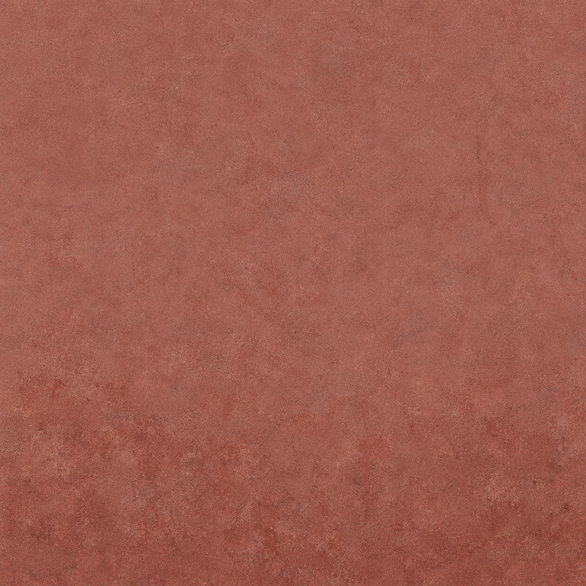
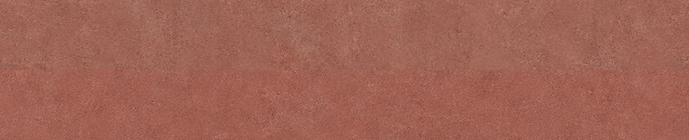
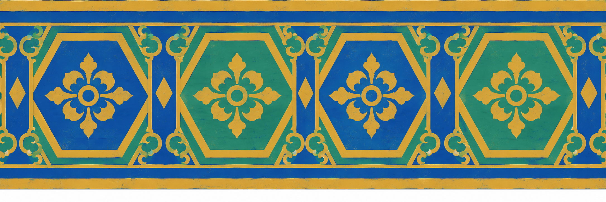
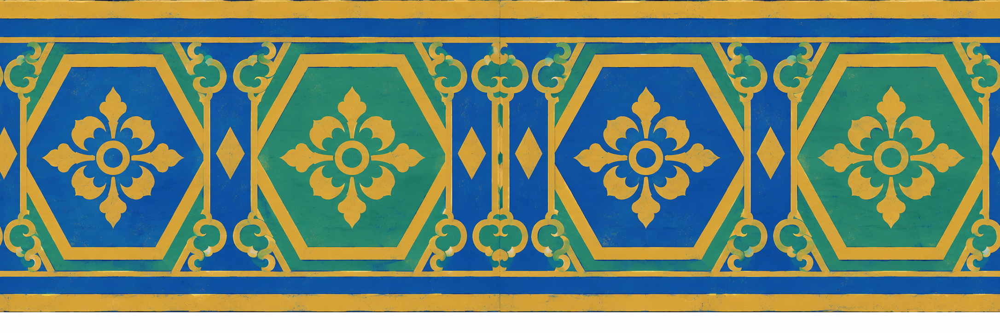

Alaosan rappaus ja räystäsnauha — uusinnat
Molempien tarkat ehdot ovat edelleen täyttymättä. Neljä sallittua kutsua käytetty. Kuvat toimitetaan PT:n arvioon virheraportin mukana.
Koko raportti · Generointiohjeet
#922 rappaus-ala-b
Tummuus lisääntyy alaspäin, vaakatoisto silmämääräisesti tasainen. Pystysuuntaista toistoa ei lähteessä vaadita.
- Yläreuna ei säilytä #917:n alareunaa sellaisenaan: raekoko ja sävy vaihtuvat suorassa liittymässä.
- Native on1254×1254;2048×2048 on tekninen suurennos.
Alkuperäinen PNG · Toimitustiedosto

PNG:n suora 2 × 2 -toisto
Liittymä lähikuva

Koko liittymä
#923 palkkimaalaus-b
Reliefivarjot on poistettu pääosin; sininen-vihreä-kulta ja neljän kuusikulmion aihe säilyvät.
- Native on2172×724 eli3:1; vaadittu natiivi4:1 ei toteutunut kummallakaan yrityksellä.
- Alareunassa on valkoinen tyhjä kaista.
- Vaakaliittymässä koristeen puoliskot, kulumat ja sävy eivät jatku täsmälleen; sauma jää näkyviin.
Alkuperäinen PNG · Toimitustiedosto

PNG:n suora 2 × 2 -toisto
Vaakaliittymä kuvan keskellä
